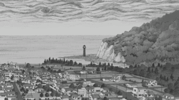
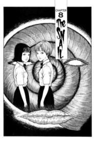
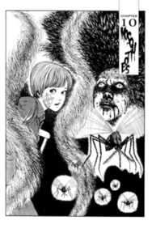
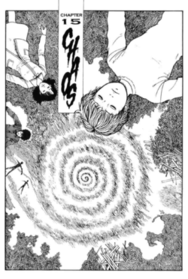
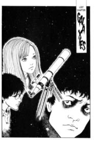

Uzumaki (うずまき) è un manga di genere horror scritto e illustrato da Junji Ito,
pubblicato a partire dall'agosto 1998.
La protagonista è Kirie Goshima, una studentessa liceale che narra in prima persona le vicende drammatiche della piccola e tranquilla cittadina del Giappone
rurale in cui vive, Kurozu-Cho. Sarà proprio lei, insieme al suo fidanzato e amico d'infanzia, Shuichi Saito, a notare che il paesaggio cittadino sta cominciando
a riempirsi di spirali, con la comparsa di turbini nell'aria, movimenti vorticosi dell'acqua del mare e persino delle foglie cadute dagli alberi.
Kurozu-Cho è stata colpita da una maledizione e, ben presto, anche i corpi dei suoi abitanti iniziano a contorcersi su se stessi.
Riusciranno Kirie e Shuichi a salvarsi, e a scoprire il terribile segreto che si cela dietro la maledizione della spirale?
Clicca sulle immagini per scoprire le trame di alcuni dei capitoli del manga!




La Lumaca
Katayama, un compagno di classe di Kirie, è preso di mira dai bulli per via della sua lentezza. Un giorno, sulla sua schiena spunta un motivo a spirale che ricorda il guscio di una lumaca e, al posto degli occhi, due lunghe antenne.
Zanzare
L'estate, gli abitanti di Kurozu-Cho sono terrorizzati da continui attacchi di sciami di zanzare che trasformano le persone colpite (in particolare, le donne incinte) in mostri assetati di sangue umano.
Caos
Già mesi dopo le prime avvisaglie della maledizione, la città è colpita da violenti tornado e le persone ancora sane sono costrette ad abbandonare le proprie case.
Galassie, il capitolo perduto
Kurozu-Cho diventa luogo di ritrovo per appassionati di astronomia, dopo la scoperta di numerose galassie a forma di spirale nel cielo visibili ad occhio nudo e che sembrano tramettere strane onde radio.